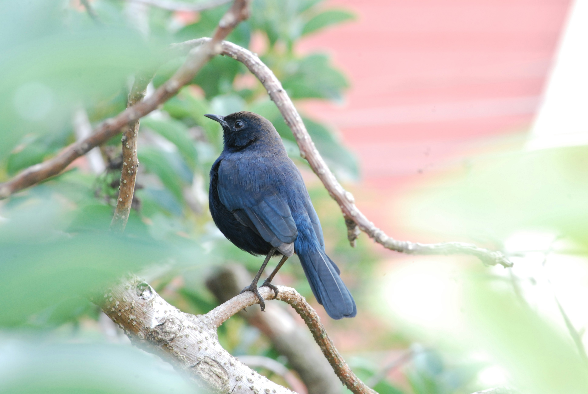

The Indian Robin is a small, active songbird of open and dry habitats. Males are generally dark with a contrasting white shoulder or wing patch, while females are browner. It spends much of its time close to the ground, running between rocks, shrubs, and grass while searching for insects. Its upright posture and habit of flicking its tail are useful identification features.